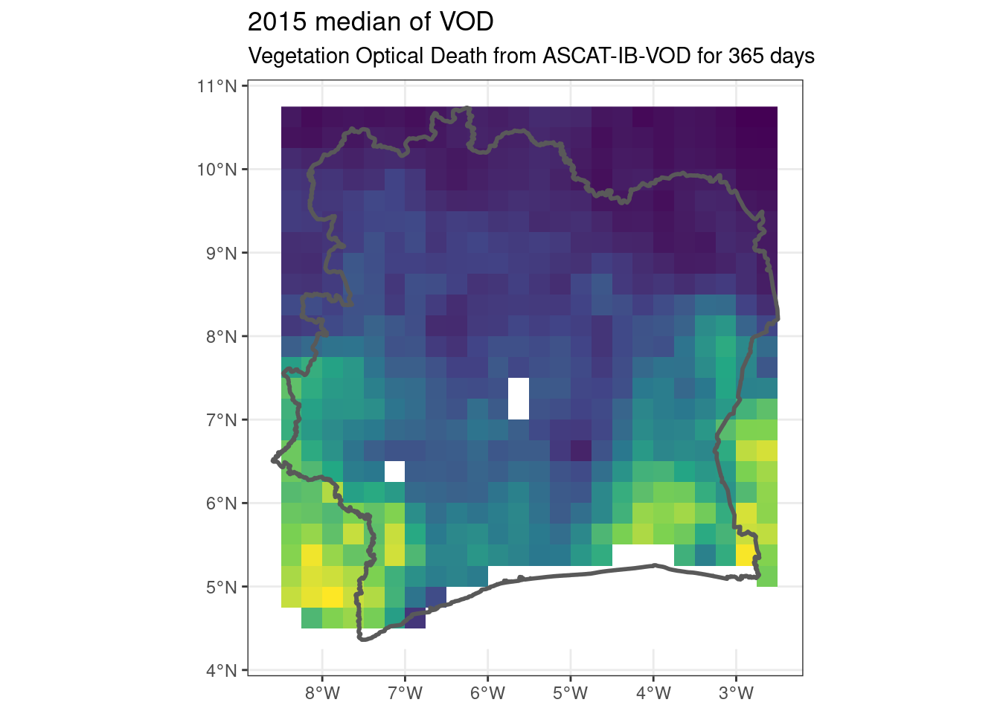
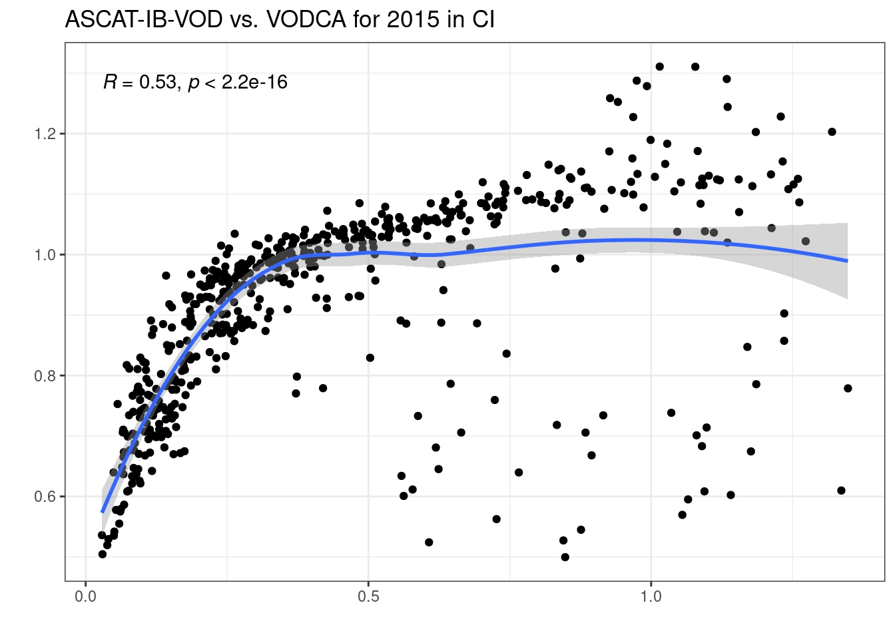

vod <-rast("~/Documents/data/ascat_ib_vod/ASCAT_IB_VOD_2015.nc") %>%crop(ci)ggplot() + tidyterra::geom_spatraster(data = vod) +geom_sf(data = ci, fill =NA, linewidth =1) +scale_fill_viridis_c(guide ="none", na.value ="white") +theme_bw() +ggtitle("2015 median of VOD", "Vegetation Optical Death from ASCAT-IB-VOD for 365 days")

Code
vodca <-rast("~/Documents/data/vodca/2015.nc") %>%crop(ci)ib <-rast("~/Documents/data/ascat_ib_vod/ASCAT_IB_VOD_2015.nc") %>%crop(vodca)c(ib, vodca) %>%as.data.frame(xy =TRUE) %>%rename(VODCA_2015 =`2015`) %>%na.omit() %>%ggplot(aes(ASCAT_IB_VOD_2015, VODCA_2015)) +geom_point() +theme_bw() +geom_smooth(method ='loess', formula ='y ~ x') + ggpubr::stat_cor() +ggtitle("ASCAT-IB-VOD vs. VODCA for 2015 in CI") +xlab("") +ylab("")

Code
ci <-st_read("~/Documents/data/limits/ci/ci.shp", quiet =TRUE)test <-rast("~/Téléchargements/dataset-satellite-land-cover-ce75f68c-f5d5-4dd0-9704-7786c35acb28/ESACCI-LC-L4-LCCS-Map-300m-P1Y-1992-v2.0.7cds.nc") %>%crop(ci)plot(test)ncdf4::nc_open("~/Téléchargements/dataset-satellite-land-cover-ce75f68c-f5d5-4dd0-9704-7786c35acb28/ESACCI-LC-L4-LCCS-Map-300m-P1Y-1992-v2.0.7cds.nc")(test$lccs_class ==40) %>%plot()
Liu, Xiangzhuo, Jean-Pierre Wigneron, Lei Fan, Frédéric Frappart, Philippe Ciais, Nicolas Baghdadi, Mehrez Zribi, et al. 2021. “ASCAT IB: A Radar-Based Vegetation Optical Depth Retrieved from the ASCAT Scatterometer Satellite.”Remote Sensing of Environment 264 (October): 112587. https://doi.org/10.1016/j.rse.2021.112587.
Moesinger, Leander, Wouter Dorigo, Richard de Jeu, Robin van der Schalie, Tracy Scanlon, Irene Teubner, and Matthias Forkel. 2020. “The Global Long-Term Microwave Vegetation Optical Depth Climate Archive (VODCA).”Earth System Science Data 12 (1): 177–96. https://doi.org/10.5194/essd-12-177-2020.